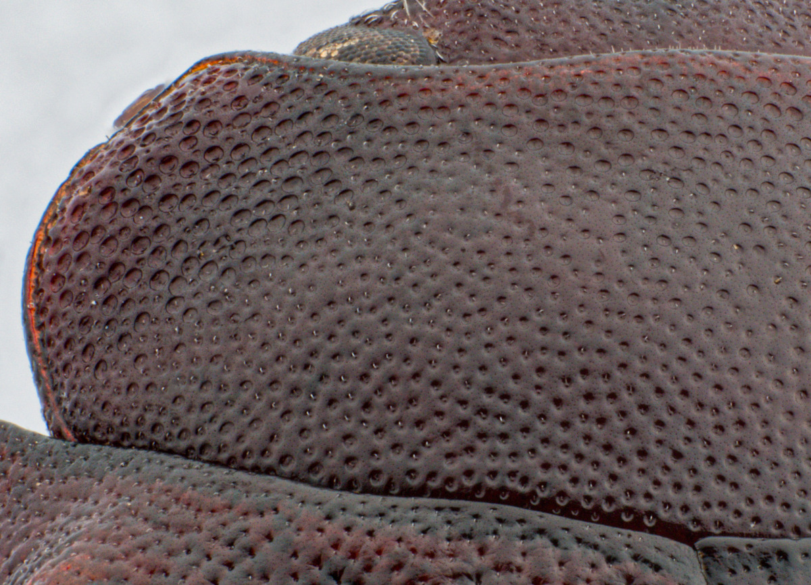
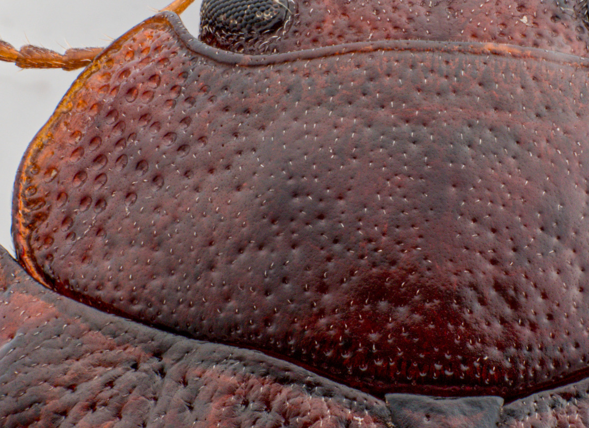

TrachymelaID
TrachymelaID
TrachymelaID
TrachymelaID
The pronotum in Trachymela provides several characters useful in species discrimination. Blackburn and some other early authors relied heavily on its proportions, the nature of its lateral margins and surface features such as roughness, puncturation and the presence or absence of verrucae to help delineate species. Here each of the relevant features is discussed and its use in the key is illustrated.

The ratio of width to length (PW/PL) varies between about 1.9 and 2.8, with each species' values in a much more narrow range. The width (PW) is measured at the widest point of the pronotum, which may be near the middle of the pronotum, or closer to its posterior edge. The length is measured from the middle of the anterior edge to the point where the pronotal posterior margin butts up against the scutellum. Some care should be taken with this measurement, as the pronotum is sometimes a little extruded, with a gap between it and the scutellum. Another critical character is the position of the widest point along the lateral margin and whether those margins are explanate (flattened/flared) or strictly convex.
The surface texture of the pronotum ranges from smooth to distinctly rugose (rough). The punctures also vary in their depth and spacing between species. Here we will discuss only the puncturation on the disc (the central section) of the pronotum. Punctures become much larger and the surface usually more rugose towards the lateral margins. Discal puncturation varies significantly in density and strength between species, but tends to be roughly similar within a species. Punctures can be deeply impressed (Fig. 2a), so that their edges are well defined, or they can be more shallow, with edges that are not so well defined (Fig 2b). Another characterization of punctures is how evenly they are distributed. Figure 2a shows a very even distribution (both in size of punctures and their spacing), while those of Fig. 2b are are much less evenly spaced and also tend to vary more in size. Even though it is relatively easy to see that the two species in Figure 2a and b have quite different types of punctures, these are characters that is quite difficult to define neatly into categories. It is difficult to draw a definitive boundary when this condition is in an intermediate state.


The presence, shape, and arrangement of verrucae (wart-like elevations) are highly diagnostic.
These are located on the main disc of the pronotum. They may be entirely absent, or present as distinct, often darker, elevations.
The foveal verruca is a small elevation within the lateral fovea (depression) on each side of the pronotum. In some species, it may be completely absent (Fig. 3a), or may be present as a well-defined, compact peak, often darker in colour than the surrounding surface (Fig. 3b) or it may be present, but as a small but more extended elevation in the surface of the fovea (Fig. 3c). Sometimes, it may be difficult to distinguish between the compact or diffuse states, but in those cases the key will be coded for both.


While often a shade of brown, the pronotum may exhibit darker maculations or a paler marginal area. Note that the presence of cuticular wax can significantly obscure these underlying patterns.